Understanding the platform foundation
The Realize platform is designed as a unified environment for enterprise cybersecurity workflows, structured into four modules — Assess, Deploy, Manage, and Agent Factory.
In the initial 0→1 MVP stage, the focus was on simplifying navigation and reducing friction across the platform.
- Four-path landing helped users quickly understand where to start
- Assess module redesigned as a marketplace with filters and cards
- Purchase flow reduced into a single modal
- Coin-based payment system aligned with enterprise behavior
These improvements made discovery and purchasing faster. However, deployment remained a manual process.
Deployment still required manual execution
Multiple manual inputs
Configuration required filling out technical fields across several screens without guidance.
Technical jargon
Users had to understand complex parameters before they could proceed.
Scattered steps
The deployment flow was spread across multiple screens with no clear through-line.
Permission interruptions
Admin consent requests appeared mid-flow, breaking momentum and context.
Even after improving navigation, the core task — deploying a service — still felt complex and time-consuming.
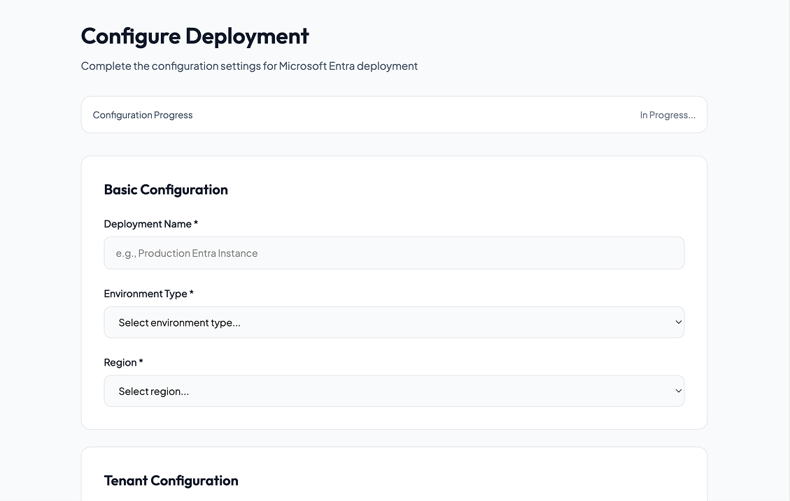
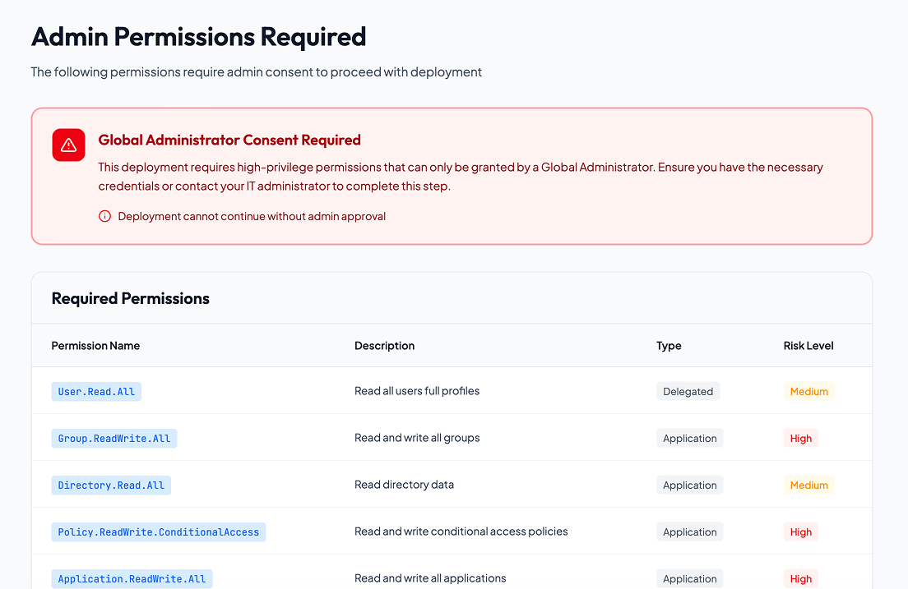
Simplifying execution, not just navigation
Instead of redesigning the UI again, the focus shifted to simplifying the execution process itself.
- Guide users step-by-step — no need to understand the system before using it
- Automate configuration and validation — reduce manual inputs
- Reduce technical complexity — surface what matters, hide what doesn't
- Execute deployment directly — from within the conversation
The chatbot was introduced to support the platform overall, but primarily to automate deployment workflows.
Understanding where friction exists
With a 15-day timeline, there was no room for long research phases. Three lightweight but targeted methods were used to map friction fast — each chosen to answer a specific question about the existing deployment flow.
Walking the flow with Nielsen's lens
The existing Deploy module was walked through systematically using Nielsen's 10 Usability Heuristics — without involving users. The goal was to surface structural issues quickly before any user time was spent.
Every screen, every transition, and every input field was evaluated against each principle. Issues were tagged by severity — critical, major, or minor — and grouped by theme.
3 critical failures in visibility, language, and user control. These alone were enough to explain why users dropped off mid-flow.
Visibility of System Status
Users receive no feedback during deployment execution. Progress states are hidden — no indication of whether the system is working, stuck, or waiting for input.
Match Between System and Real World
Technical parameter labels (e.g. "API binding scope", "namespace prefix") are shown without explanation. Security leads without DevOps background are blocked immediately.
User Control & Freedom
Mid-flow permission requests redirect users to an admin screen with no way back. Returning means starting the entire deployment over — no save state exists.
Error Prevention
There is no pre-flight validation or checklist before execution begins. Users can trigger deployments in misconfigured states with no warning.
Consistency & Standards
Visual language (colors, type, buttons) is consistent across modules. The problem is workflow logic, not visual language.
Simulating the full deployment scenario
With heuristic issues identified, the next step was to experience them in sequence — simulating what an actual security lead would do when deploying a service for the first time, from module entry to final confirmation.
Each screen transition was timed and annotated. Drop-off points were marked where a real user would likely abandon the flow, and the reasoning behind each was captured.
Understanding what the system could actually do
Before designing solutions, the technical floor had to be understood. Conversations with the PM and four developers clarified what the system could automate, what required human input, and what was architecturally fixed.
This wasn't a requirements gathering session — it was about understanding constraints so that design decisions wouldn't promise what the system couldn't deliver.
Execution was the real problem
- Friction existed after purchase, not before — users knew what to buy, but couldn't complete setup
- Deployment is inherently step-based — but the UI didn't reflect this, forcing users to mentally sequence the process
- Manual configuration increased cognitive load — technical fields required knowledge most users didn't have
- Permissions broke the flow — appearing unexpectedly without context or guidance
- Users needed guidance and execution support — not just a better interface
The problem wasn't that the UI was bad. It was that the process was exposed to the user instead of handled for them.
A conversational execution layer
A context-aware chatbot was introduced to automate deployment workflows across the platform. Rather than a support tool, it acts as the primary execution interface.
- Single chatbot across Deploy and Manage modules — consistent experience, no context switching
- Step-by-step guided execution — the system does the work, user confirms
- Inline handling of permissions and validation — no page redirects or interruptions
- Reduced need for navigation — one conversation handles the entire deployment
From multi-screen navigation to a single conversation
The old flow required users to move across 4–5 screens, interpret technical fields, and manage permissions manually. The new flow collapses this into a single guided conversation with inline actions.
From manual steps to guided execution
Every step of the deployment is handled within the conversation — from session entry to final confirmation.
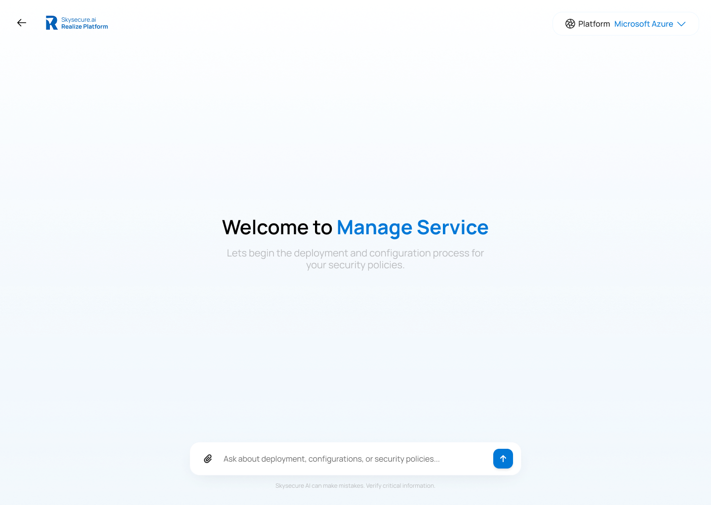
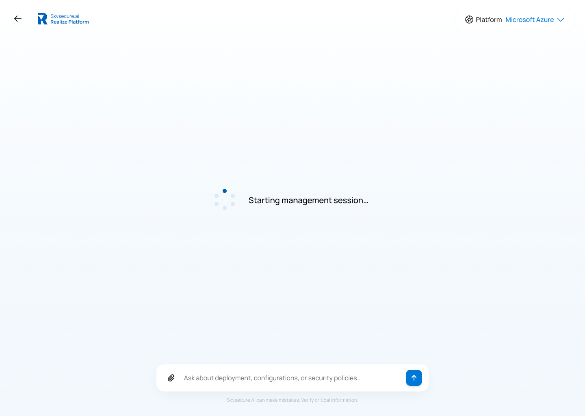
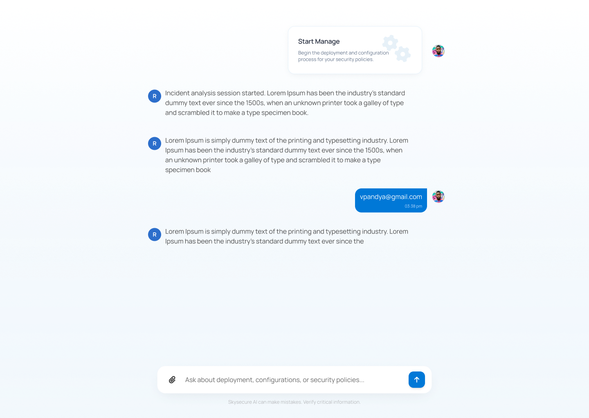
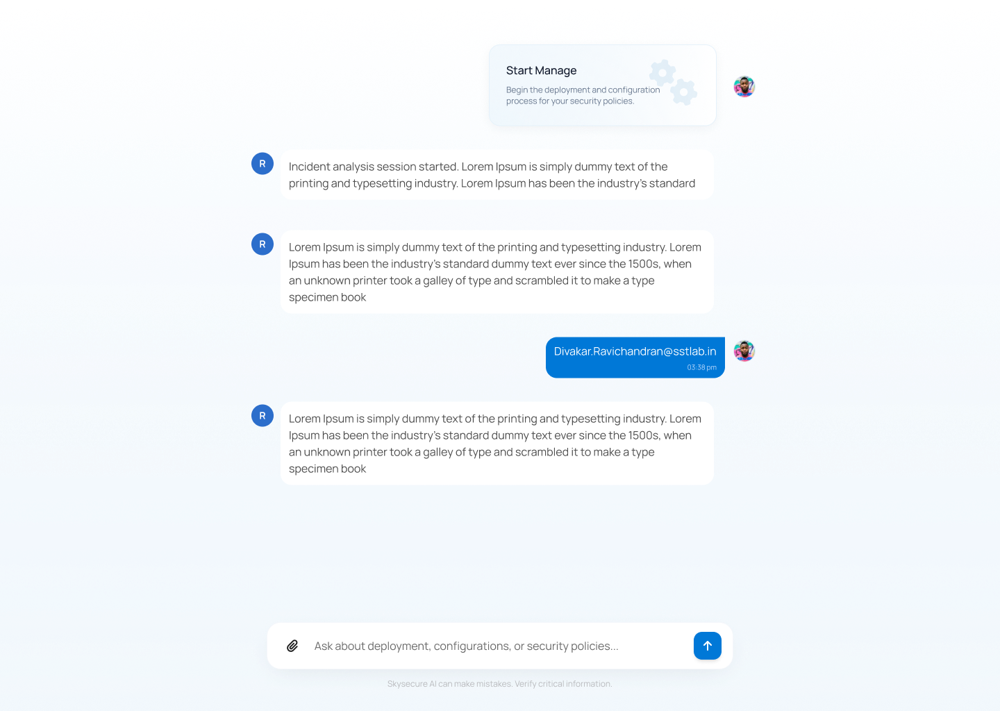
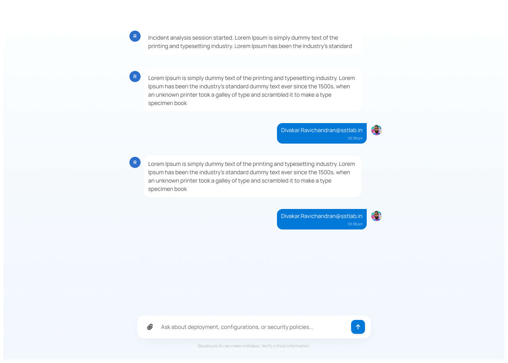
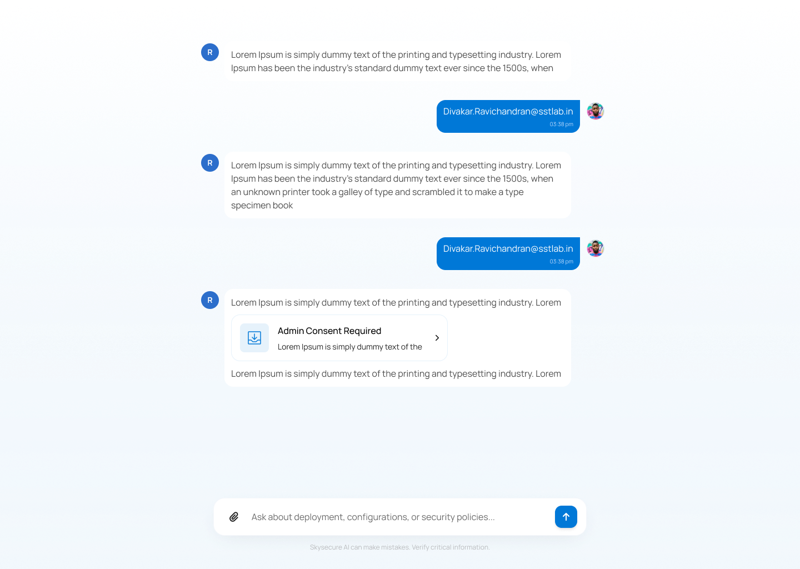
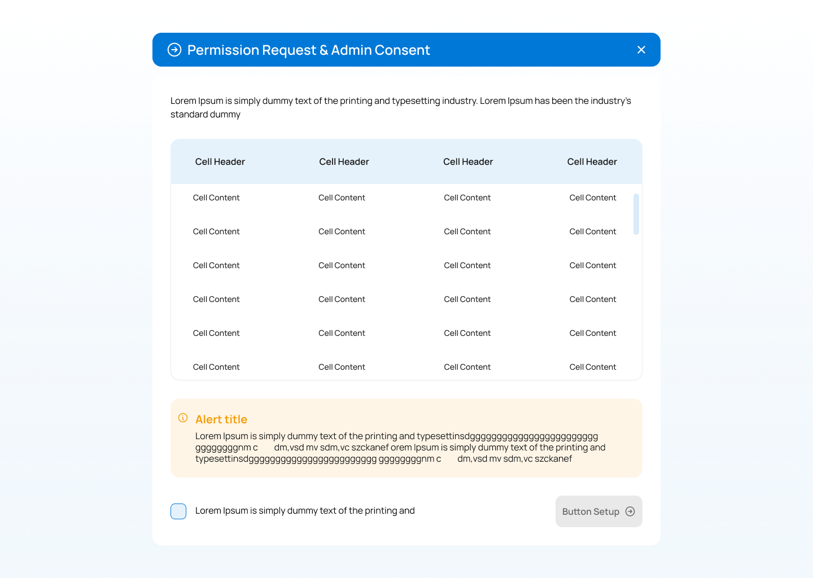
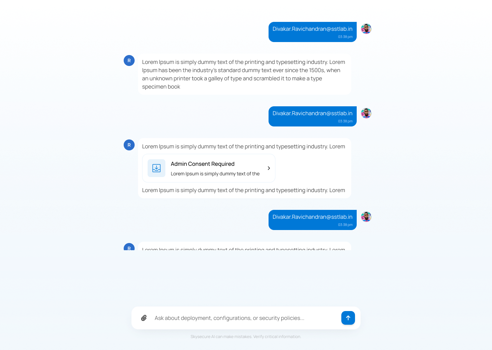
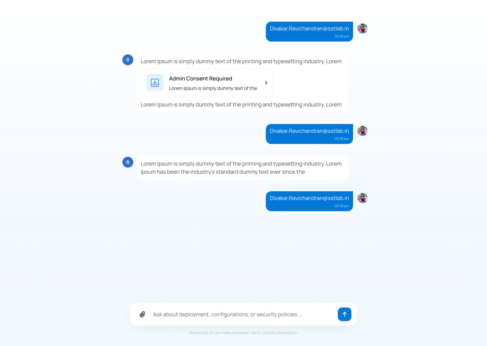
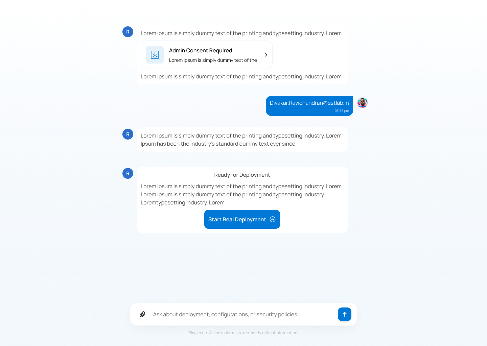
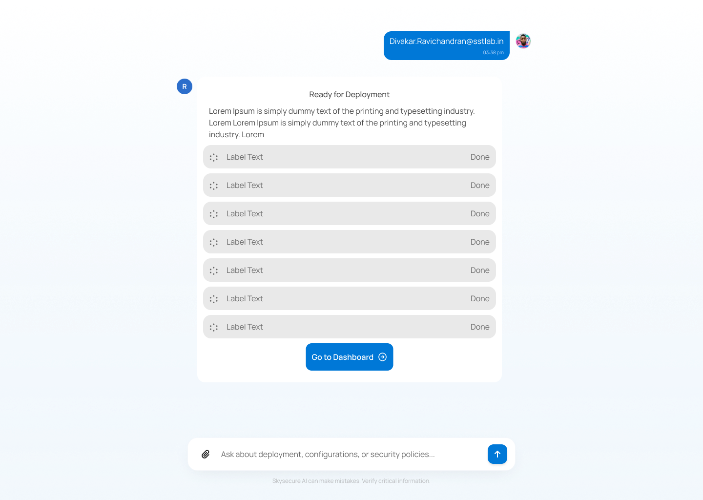
The chatbot doesn't stop at deployment
After deployment, the same conversational layer continues into the Manage module — providing status updates, handling incidents, and surfacing actions without requiring users to navigate away.
- Seamless handoff — deployment ends and management begins in the same chat thread
- Status transparency — users always know what the system is doing and why
- Action within conversation — users can trigger actions (restart, configure, escalate) from the chat
- Consistent interface — no new patterns to learn when moving from Deploy to Manage
The choices that shaped the experience
Session-based entry sets mental context
Opening with "Starting management session…" grounds the user before any interaction begins. It signals that the system is aware, prepared, and working with them — not just waiting for input.
Checklist before execution reduces anxiety
Surfacing a structured pre-deployment checklist lets users verify readiness before committing. This reduces the fear of doing something wrong and builds confidence in the system.
Permissions handled inline, not as interruptions
Instead of redirecting to a separate admin screen, permission requests are surfaced as cards within the conversation. The user never loses their place or context.
Expected improvements
- Deployment simplified into a single guided flow — no screen switching required
- Technical configuration abstracted away — users make decisions, not configurations
- Permission handling integrated inline — no flow interruption
- Scalable foundation for automating future workflows across the platform
The chatbot isn't a feature layer on top of the product — it is the product experience for deployment. That's the real shift.
What this project taught me
This was a short engagement — 15 days from brief to delivery. Looking back, three things stand out as genuine shifts in how I think about design.
Conversation is a UX pattern, not just a feature
I went in thinking of the chatbot as a tool layered on top of the UI. I came out understanding it as an entirely different interaction model — one that's particularly powerful when the task is inherently sequential. The chat window isn't a shortcut. It's the interface. That reframe changed almost every design decision I made.
The hardest design problem is knowing what to hide
Deployment involves dozens of real technical decisions. The temptation was to surface them all "transparently." What actually helped users was the opposite — abstracting the complexity and only surfacing the decisions that genuinely needed human input. Drawing that line was harder than designing the UI around it.
Speed forced better prioritisation
15 days is not enough time to be precious. I had to decide early what mattered most — and the heuristic evaluation forced that clarity. I didn't have time to design everything well, so I designed the critical path well and left the rest for the next iteration. That discipline produced a tighter, more focused outcome than a longer timeline might have.
The chatbot doesn't end at deployment
Conversational deployment was designed as the first phase of a larger pattern — a single continuous thread that carries from Deploy into Manage without the user needing to restart or reorient.
A single conversation layer across the entire platform — from Assess to Deploy to Manage to Agent Factory — where the AI knows what you just did and what you likely need to do next.